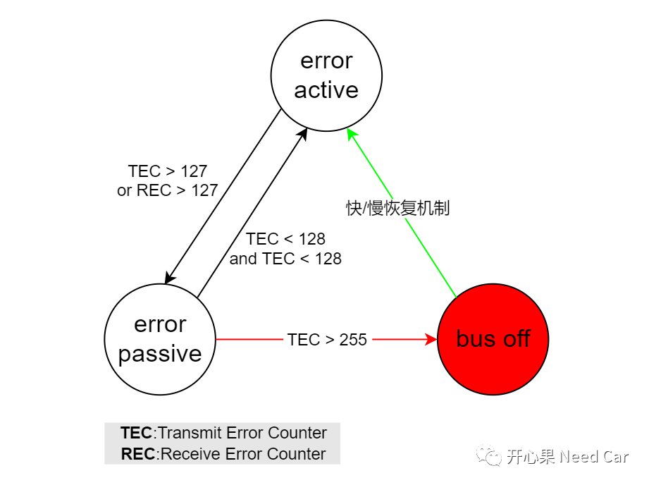
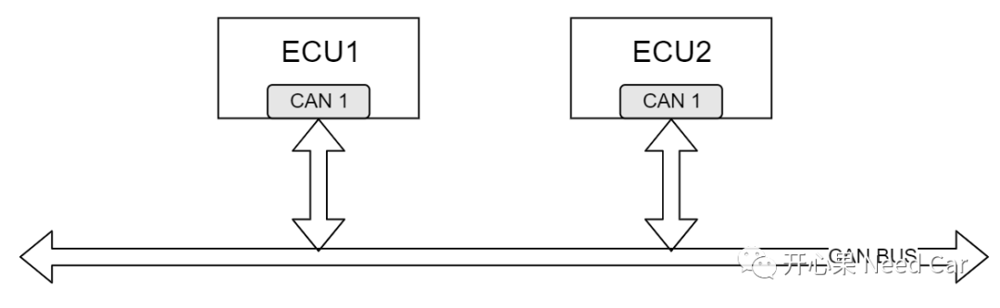
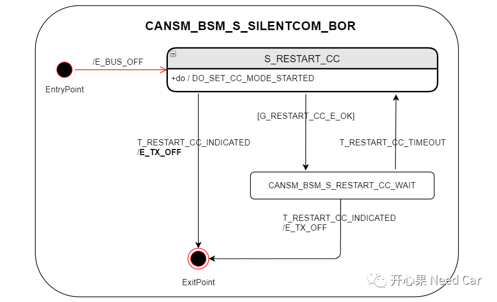
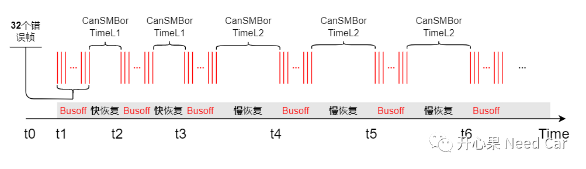
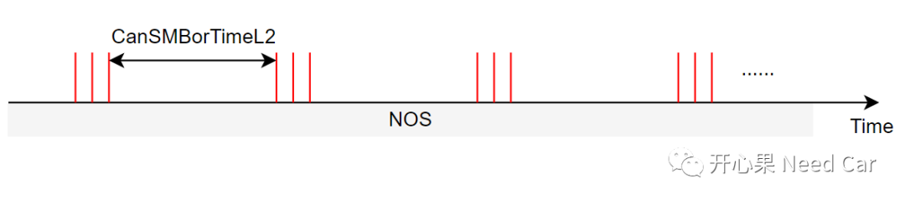
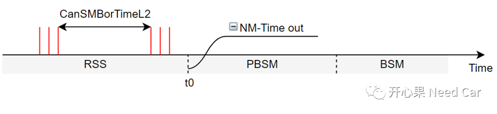

开心果 Need Car · 2022-06-09T09:16:00+08:00 · 微信原文
CAN总线中，相对其他通信类问题，Busoff问题比较难搞。本文从CanSM模块出发，就Busoff产生、Busoff信息交互、Busoff快/慢恢复等问题展开聊一聊。
这个话题前面有聊过，可以参考前文Autosar网络管理：说说Busoff那点事。
这里再说一次Busoff产生的条件：TEC > 255。也就是说ECU自身发出的报文错误，导致TEC(Transmit Error Counter)不断累加，直到TEC超过255产生Busoff，如下所示：


节点产生Busoff以后，ControllerMode状态自动切换到CANIF_CS_STOPED模式，停止发送错误帧，避免影响总线其他节点的通信。既然Busoff已经发生，对应的信息就需要传递给上层，让上层决策后续的通信行为。怎样通知上层呢？
Can Controller通知到上层有两种方式：Interrupt或者Polling。
Step1、Busoff事件信息如何通知到CanSM
提示：上述函数关联关系，除Autosar标准接口以外，其他接口，不同软件供应商，实现上可能存在不同。
Step2、CanSM请求重启Can Controller，通知ComM、BswM模式切换
Busoff发生以后，CanSM调用CanIf_SetControllerMode()接口，请求将ControllerMode切到CANIF_CS_STARTED模式，以便于后续尝试恢复通信。同时关闭Tx PDU的发送，只能接收Rx PDU。所以这也是为什么在恢复期内可以收到报文的原因。CanSM调用BswM_CanSM_CurrentState()接口通知BswM进入CANSM_BSWM_BUS_OFF状态，调用ComM_BusSM_ModeIndication()接口通知ComM进入COMM_SILENT_COMMUNICATION状态。
Busoff发生以后，CanSM先告知ComM，ComM在请求CanSM对应Channel由FULL COMMUNICATION进入SILENT COMMUNICATION。进入CANSM_BSM_S_SILENTCOM_BOR状态，如下所示：

Busoff发生以后，CanSM会启动一个Busoff Timer，Busoff Timer分为两种：
快恢复时间参数：CanSMBorTimeL1；
慢恢复时间参数：CanSMBorTimeL2。
具体Busoff Timer应该等于CanSMBorTimeL1还是CanSMBorTimeL2，取决于配置参数CanSMBorCounterL1ToL2。
如果Busoff连续发生次数 ＜ CanSMBorCounterL1ToL2，Busoff Timer = CanSMBorTimeL1；
如果Busoff连续发生次数≥ CanSMBorCounterL1ToL2，Busoff Timer = CanSMBorTimeL2；

在快/慢恢复时间内，可以接收报文。
Step3、CanSMBorTimeL1或者CanSMBorTimeL2耗尽
CanSMBorTimeL1或者CanSMBorTimeL2耗尽(elapse)，重新发送Tx PDU，让故障节点再次尝试向CAN总线发送报文。同时，CanSM通知BswM进入CANSM_BSWM_FULL_COMMUNICATION状态，通知ComM进入COMM_FULL_COMMUNICATION状态。可以启动CanSMBorTimeTxEnsured，确认Busoff是否恢复，也可以使用Confirm方式确认Busoff恢复。
Step4、CanSMBorTimeTxEnsured耗尽
在CanSMBorTimeTxEnsured时间内，Busoff再次发生，则进行下一次的Busoff恢复机制，如果CanSMBorTimeTxEnsured耗尽，则说明成功从Busoff状态恢复。如果在CanSMBorTimeTxEnsured时间内，再次发生Busoff，则Busoff次数累加。
这里主要讨论Busoff进入慢恢复期，节点在NOS(Normal Operation State)和RSS(Ready Sleep State)下是否会进行网络状态切换。
NOS：Busoff进入慢恢复期，如果上层不主动请求释放网络，网络状态无法进入RSS，所以，节点会一直在NOS状态下，一直处于慢恢复状态，如下所示：

RSS：Busoff进入慢恢复期，如果在恢复期收不到有效的网络管理报文，NM-Timeout时间超时以后，进入PBSM(Pre Bus Sleep Mode)；如果可以收到有效的网络管理报文，则网络处于RSS状态，如下所示：

如果节点在NOS状态下，一直处于慢恢复，会带来什么问题呢？节点一直在慢恢复期，意味着该节点不会外报文(应用报文和网络管理报文均不会外发)，其他节点会上报对应的节点丢失故障。
参考资料
SIMPLE TITLE
AUTOSAR_SWS_CANStateManager.pdf
往期精彩回顾